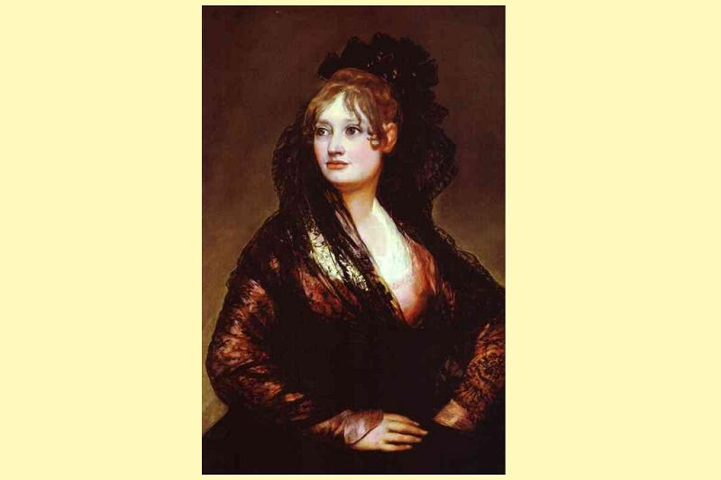
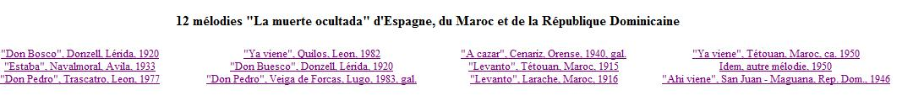
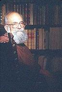

La muerte ocultada
La mort cachée
"Romance" hispanique en 4 versions
Version 1 tirée du site de Joaquim Diaz
Versions 2 à 4 tirées d'un article de Diego Catalàn cité ci-après


12 mélodies "La muerte ocultada" d'Espagne, du Maroc et de la République Dominicaine
Le fond sonore est la mélodie N°1, "Don Bosco su fue de caza", communiquée par M. Padrig Kobis
Les autres mélodies proviennent du site "depts.washington.edu/hisprom/optional/balladaction.php" (67 versions hispaniques)
Les arrangements sont de Christian Souchon (c) 2014
2 autres mélodies accompagnent les
versions catalanes
de la "Mort cachée".
CASTILLAN
LA MUERTE OCULTADA
(Version 1)
1. Don Bosco se fue de caza
a cazar como solía
los perros llevan cansados
la caza no parecía. [1]
2. Se volvió donde su madre
con más pena que alegría
en el medio del camino
mal de muerte le venía
3. - Lo que le digo mi madre
respóndame madre mía
no se lo digo a mi esposa
hasta pasar año y día
4. - A usté le digo mi suegra
respóndame suegra mía
a dónde está mi don Bosco
que él a verme no venía
5. - Tú don Bosco no está aquí
fue a una santa romería
y me dijo que no vuelve
hasta pasar año y día
6. - Pues hoy se cumple el año
mañana se cumple el día
de los vestidos que tengo
¿cuál yo mejor me pondría?
7. - Ponte tu vestido negro
que muy bien que te estaría
Ay, malhaya la mi suegra
consejo que me daría
estar mi don Bosco vivo
y yo de luto vestida
8. - Pues ponte el que tu quieras
que a mi igual que me daría. -
Vestida iba de seda
calzada de plata fina
...
9. Cuando iban a la iglesia
la gente mucho la mira
- La viuda de don Bosco!
oh qué linda viudina! -
10. - A Usté le digo mi suegra,
respóndame suegra mía!
mucho me mira la gente
y mirarme no solía.
11. - Es que como eres tan guapa
seguro les gustarías.
Cuando entraron a la iglesia
una mala seña había
12. - A usté le digo mi suegra
respóndame suegra mía
¿de quién son aquellas velas
que arden en nuestra capilla?
13. - Las velas son de don Bosco
que en la caza se moría
- Pues quién le dio a él la muerte
que me quite a mi la vida
Y al otro día temprano
el entierro la viudina. [2]
Origine: Fundacion Joaquin Diazwww.funjdiaz.net/letras.php
FRANCAIS
LA MORT CACHEE (Version 1)
1. Don Bosco rentra de la chasse
Comme il en avait l'habitude.
Ses chiens étaient exténués
Sans qu'aucun gibier n'ait paru. [1]
2. Il retourna où vivait sa mère,
Plus peiné que content.
Voilà qu'à mi-chemin
Le mal de mort lui vint.
3. - Ce que je vous dis, ma mère,
Promettez-moi, ma mère,
De ne pas le dire à mon épouse
Avant qu'un an et un jour ne soient passés.
4. - Je m'adresse à vous, ma belle mère,
Répondez-moi, ma belle-mère.
Où donc est mon don Bosco
Pourquoi ne vient-il pas me voir?
5. - Ton Don Bosco n'est pas ici.
Il est parti pour un saint pèlerinage
Et il m'a dit qu'il ne reviendra pas
Avant un an et un jour.
6. - Mais c'est aujourd'hui que l'année s'achève!
Demain cela fera un an et un jour.
Parmi les habits que je possède,
Lequel m'ira le mieux?
7. - Mets ton habit noir
Qui t'ira très bien.
Hélas, ma belle-mère,
Quel conseil me donnez-vous là?
Mon Don Bosco est vivant
Et moi je porterais le deuil?
8. - Mets donc ce que tu veux.
Cela m'est bien égal. -
Elle alla vêtue de soie
Et chaussée d'argent fin.
...
9. Tandis qu'elles se rendaient à l'église
Les gens ne faisaient que la regarder:
- La veuve de Don Bosco!
Oh la jolie veuve! -
10. - Je vous le dis, ma belle-mère,
Répondez-moi, ma belle-mère,
Les gens ne font que me regarder
Eux qui ne me regardaient jamais.
11. - C'est que, comme tu es bien mise
Sûrement tu leur plait.
Lorsqu'elles entrèrent dans l'église,
Il y avait un mauvais signe.
12. - Je vous le dis, ma belle-mère,
Répondez-moi, je vous prie.
Pour qui sont ces bougies
Qui brûlent dans notre chapelle?
13. - les bougies sont pour Don Bosco
Qui est mort à la chasse.
- Alors, que Celui qui lui donna la mort,
A moi m'ôte la vie! -
Et le lendemain de bonne heure
On enterra la jeune veuve. [2]
NOTES:
[1] Cette première strophe est commune à ce chant et à
"La Infantina"
(N.d.T.)
[2] El Romancero del siglo XX no sólo hereda la tradición baladística que halló acogida entre los impresores de romances del siglo XVI , sino que fue despreciada entonces, pero nunca dejó de cantarse. Un buen ejemplo de las limitaciones en el gusto de los eruditos del Siglo de Oro es este romance, que sobrevive en formas muy varias y que ejemplifico con tres textos.
[1] Cette première strophe est commune à ce chant et à
"La Infantina"
(N.d.T.)
[2] Le "Romancero" (corpus des ballades hispaniques) du 20ème siècle hérite non seulement du répertoire accueilli dans leurs ouvrages par les éditeurs de "romances" (nom espagnol de la ballade) du 16ème siècle, mais aussi de ce qui n'était pas du goût de ladite époque, sans pour autant avoir jamais cessé d'être chanté. La présente ballade est un bon exemple de ces pièces qui heurtaient le bon goût des érudits du Siècle d'Or. Elle a survécu sous des formes diverses bien résumées par les trois versions présentes.
.
CASTILLAN
LA MUERTE OCULTADA (Version 2) [3]
1. Ya viene don Pedro
__de la guerra herido,
2. que corre, que vuela
__por ver a su hijo.
3. -Cúreme usted, madre,
__estas tres heridas,
4. que me voy a ver
__la recién parida.
5. -¿Cómo estás, Teresa,
__de tu feliz parto?
6. -Yo buena, don Pedro,
__si tú vienes sano.
7. -Acaba, Teresa,
__de dar tus razones,
8. que me está esperando
__el rey en la Corte.-
9. Al salir del cuarto,
__don Pedro expiró,
10. se quedó la madre
__con mucho dolor.
11. Campanas redoblan,
__campanas repican
12. porque no se entere
__la recién parida.
13. -Madre, la mi madre,
__la mi siempre amiga,
14. ¿qué es aquella bulla
__que hay en la cocina?
15. -Te digo, mi nuera,
__como buena amiga,
16. son juegos de naipes
__porque estás parida.-
17. Ya cumple Teresa
__los cuarenta días,
18. le dice a su suegra
__como buena amiga:
19. -¿Qué traje me pongo
__para ir a misa?
20. -Ponte el traje negro,
__que te convenía.-
21. Al salir de misa,
__todos le decían:
22. "La viudita honrada
__la viuda garrida".
23. -Madre, la mi madre,
__la mi siempre amiga,
24. ¿qué es esas palabras
__que a mí me decían?
25. -Que don Pedro es muerto,
__tú no lo sabías.
26. -Si don Pedro es muerto,
__no es razón yo viva.-
27. Se metió en su cuarto,
__corrió las cortinas
28. y con un puñal
__se quitó la vida.
29. Tocan las campanas
__con mucha tristeza
29. porque ya se han muerto
__don Pedro y Teresa. [4] [5]
FRANCAIS
LA MORT CACHEE (Version 2) [3]
1. Sire Pierre revient
De guerre, -il est blessé-
2. En toute hâte: il tient
A voir son nouveau-né.
3. Ma mère, soignez-moi,
Ces trois vilaines plaies
4. Que je puisse aller voir
La nouvelle accouchée.
5. - Thérèse es-tu remise
De cet enfantement?
6. - Oh, Pierre, je vais bien
Car je te vois vivant!
7. Thérèse, donne-moi
Vite de tes nouvelles,
8. Car à sa cour le roi
S'impatiente et m'appelle. -
9. En sortant de la chambre
Pierre, hélas, rendit l'âme,
10. Livrant à la douleur
Sa mère, pauvre femme!
11. Voilà qu'on carillonne
Qu'on sonne à la volée
12. Pour ne pas alerter
La nouvelle accouchée.
13. - Mère, O ma chère mère,
Vous m'aimez, n'est-ce pas?
14. Quel vacarme entend-on
Dans la cuisine, en bas?
15. - Ma bru, c'est ton amie
Qui te fait confidence:
16. On veut, jouant aux cartes,
Fêter ta délivrance. -
17. Quarante jours déjà
Que Thérèse accoucha.
18. Et à sa belle-mère,
Donc, elle demanda:
19. - Quelle tenue mettrai-je
Au jour des relevailles?
20. - Mets donc la robe noire
C'est la seule qui t'aille.-
21. Au sortir de la messe
Tout le monde disait:
22. - Voyez la jolie veuve!
C'est elle qu'on fêtait! -
23. - Mère, ma chère mère,
Vous êtes mon amie:
24. Voilà d'étranges mots.
Qu'est-ce qu'ils signifient?
25. - Ne le savais-tu point?
Ton époux, Pierre, est mort.
25. Sire Pierre n'est plus!
A quoi bon vivre encor?
26. Elle alla dans sa chambre
Et tira les rideaux.
27. Et mit fin à ses jour
A l'aide d'un couteau.
28. Les cloches cette fois
Tintent avec tristesse.
29. Elles sonnent le glas
Pour Pierre et pour Thérèse. [4] [5]
NOTES:
[3] En la mitad sur de España (Andalucía, Murcia, Extremadura, Sur de Salamanca y de Ávila, La Mancha) se canta, en
versos de 6 + 6 constituyendo pareados de asonancia cambiante
, sin apenas variaciones textuales, así: (cf. Version 2)
[4] El romance es un
paralelo de una balada francesa
de gran difusión llamada "Le roi Renaud", que en su versión más generalizada coincide con la del Sur español en comenzar la narración con el regreso de Renaud, herido y moribundo, de la guerra:
"Le roi Renaud de guerre revient..."
[5] Pero esta versión "vulgata" de la España meridional, de ritmo ligero y saltarín, aunque en el pasado siglo haya cruzado el Estrecho propagándose entre las comunidades sefardíes de Marruecos, haya viajado a América, donde se han recogido versiones dominicanas, y ya empezara a hacerse ocasionalmente presente al Norte de la Cordillera Cantábrica, no es un buen representante del tema de "La muerte ocultada". Tiene el gran defecto de
no explicar qué propósito tiene la ocultación temporal por la suegra de la muerte de su hijo
. Y, en consecuencia, de oscurecer la intencionalidad del relato, dejando, incluso, abierto el camino a un trastrueque completo de su mensaje.
(Une telle inversion de sens se produit dans 2 versions françaises citées par F-J. Child à propos du chant 42 "Clerk Colvill", p.382 du tome II de son recueil: Saint-Denis, "Poésies populaires de France", III, fol. 103, in "Romania", XI, 98; et Rouen, "Poésies pop.", III, fol. 100, in "Romania" XI, 102. Elles se terminent par cette terrifiante demande de la jeune veuve:
"Ma mère, dites au fossoyeux
Qu'il creuse une fosse pour deux!
Et que l'espace y soit si grand
Que l'on y mette aussi l'enfant!)
(N.d.T.)
[3] Dans le centre de l'Espagne (Andalousie, Murcie, Estrémadure, sud de Salamanque et d'Avila, Manche), la ballade se présente sous forme de
distiques de 6 pieds à terminaisons dissonantes.
. Le texte est pratiquement invariable (cf. version 2)
[4] Cette pièce fait
pendant à une ballade française
très répandue intitulée "Le roi Renaud", qui dans sa version la plus répandue, reproduit celle du midi de l'Espagne en commençant par raconter le retour de Renaud qui revient de guerre, blessé et mourant:
"Le roi Renaud de guerre revient..."
[5] Mais cette "vulgate" du midi de l'Espagne, au rythme léger et sautillant, même si, au siècle dernier, elle a franchi le détroit de Gibraltar pour être appropriée par les communautés séfarades du Maroc, même si elle est partie pour l'Amérique où l'on a recueilli des versions dominicaines et si elle va bientôt faire quelques apparitions au nord de la Cordillère Cantabrique, n'en est pas moins une illustration inapropriée du thème de la "mort cachée". Son grand défaut est de
ne pas expliquer dans quel but la belle-mère cache provisoirement la mort de son fils
. Et par conséquent elle obscurcit les intentions qui sous-tendent le récit, ouvrant même la voie à une inversion complète du message qu'il véhicule.
(Une telle inversion de sens se produit dans 2 versions françaises citées par F-J. Child à propos du chant 42 "Clerk Colvill", p.382 du tome II de son recueil: Saint-Denis, "Poésies populaires de France", III, fol. 103, in "Romania", XI, 98; et Rouen, "Poésies pop.", III, fol. 100, in "Romania" XI, 102. Elles se terminent par cette terrifiante demande de la jeune veuve:
"Ma mère, dites au fossoyeux
Qu'il creuse une fosse pour deux!
Et que l'espace y soit si grand
Que l'on y mette aussi l'enfant!)
(N.d.T.)
CASTILLAN
LA MUERTE OCULTADA (Version 3) [6]
1. Un lunes por la mañana
__don Bueso a caza salía.
2. Caminara siete leguas
__sin encontrar cosa viva;
3. si no es un puercoespín,
__que ni los perros comían.
4. Llovía y achaguzaba
__un agua muy menudina;
5. los perros iban cansados,
__los galgos ya no corrían.
6. Le vino el mal de la muerte,
__a su casa se volvía.
7. -¡Albricias le doy, don Bueso,
__que dármelas bien podía,
8. que doña Ana ya parió
__y un mayorazgo tenía!
9. -Él será hijo sin padre,
__sin padre él se criaría.-
10. -¿Qué caza nos traes, Bueso,
__qué caza nos traerías?
11. -Caza que conmigo traigo,
__la Muerte en mi compañía.
12. Hágame la cama, madre,
__en la sala la de arriba;
13. hágame la cama, madre,
__para la perpetua vida.
14. No se lo diga a doña Ana
__
hasta un año y un día,
15. no se lo diga a doña Ana,
__que está tierna de parida.-
16. -Diga, diga, la mi suegra,
__la mi madre tan querida,
17. ¿por quién tocan las campanas,
__que tocan tan doloridas?
18. -Es el uso de la tierra
__cuando una mujer paría.-
19. -Diga, diga, la mi suegra,
__la mi madre tan querida,
20. las paridas de esta tierra
__¿de qué tiempo van a misa?
21. -Unas van a tres semanas,
__otras tardan quince días;
22. tú, por ser de gente noble,
__hasta un año y un día,
23. hasta que tu niño vaya
__de la mano para misa.-
24. -Diga, diga, la mi suegra,
__la mi madre tan querida,
25. de las ropas que yo tengo
__¿cuáles llevaré a la misa?
26. -Las de seda por abajo,
__las de negro por arriba.
27. -¡Tenerlas de plata y oro,
__y he de ir de negro vestida!
28. -Doña Ana, tú eres muy blanca,
__lo negro bien te estaría.
29. -¡Mejor me estaría, madre,
__vestido de pedrería!
30. -Vístete de lo que quieras,
__que en el arca lo tenías.-
31. Coge el niño de la mano,
__para la iglesia camina.
32. En el medio del camino,
__un pastorcito decía:
33. -¡Oh qué viuda tan hermosa,
__oh qué viuda tan florida,
34. que tiene al marido muerto,
__se viste de pedrería!
35. -¿Qué dice aquel pastor, madre,
__el que la cuerna tañía?
36. -Que andemos aprisa, flor,
__que perderemos la misa.-
37. -Diga, diga, la mi suegra,
__la mi madre tan querida,
38. ¿por quién son esos hachones,
__que arden en nuestra capilla?
39. -Son los de mi hijo don Bueso
__que en el alma lo quería.
40. -¡Válgame Dios, la mi suegra!,
__¡qué engañada me tenía!-
41. Aún bien no lo había dicho,
__muerta en el suelo caía. [7]
FRANCAIS
LA MORT CACHEE (Version 3) [6]
1. Un lundi, à la prime aurore
Don Buesco s'en fut à la chasse.
2. Il va bien parcourir sept lieues
Sans rencontrer âme qui vive
3. Si ce n'est un porc-épic
Dont pas même un chien ne voudrait.
4. Il pleuvait et il bruinait:
Une pluie vraiment toute fine.
5. Les chiens étaient fatigués.
Les lévriers ne couraient plus.
6. Le mal de la mort le saisit
Alors qu'il retournait chez lui.
7. - Avoue-toi vaincu, Don Buesco,
Je l'ai, ma foi, bien mérité:
8. Dona Ana vient d'accoucher.
Et moi j'avais un majorat!
9. - ce sera là un fils sans père.
Sans père il devra se nourrir. -
10. - Que rapportes-tu, dis, Buesco
De la chasse, dis, quel gibier?
11. - Vois le gibier que je rapporte:
La mort qui s'attache à mes pas.
12. Prépare-moi mon lit, ma mère!
Fais le dans la chambre du bas.
13. Fais-moi mon lit ma chère mère
Je ne m'en relèverai pas.
14. Pas un mot à doña Ana,
Pas avant un an et un jour
.
15. Pas un mot à Doña Ana.
Elle est fragile et innocente.
16. - Dites-moi ma belle-mère,
Ma mère que je chéris tant:
17. Pourquoi les cloches sonnent-elles
Avec un son si affligeant?
18. C'est l'usage de ce pays
Lorsqu'une femme vient d'accoucher.
19. - Dis-moi, dis-moi, belle mère,
Ma mère que je chéris tant:
20. - Les accouchées dans ce pays
Quand fête-t-on leurs relevailles?
21. Les unes au bout de trois semaines
Les autres au bout de quinze jours,
22. Pour toi qui es de race noble
Ce sera un an et un jour:
23. Jusqu'à ce que ton enfant marche
Et tu le tiendras par la main.
24. - Dis-moi, dis-moi, belle mère,
Ma mère que je chéris tant:
25. Parmi les habits que le possède,
Lesquels mettrai-je pour la messe?
26. - En bas une jupe de soie.
En haut il faut un corset noir.
27. -J'ai des bijoux d'or et d'argent
Et j'irais toute de noir vêtue?
28. - Doña Ana, tu étais bien pâle
Le noir t'irait très bien, je crois.
29. - Ce qui m'irait mieux, mère,
Ce serait un habit de strass!
30. - Habille-toi comme tu l'entends:
Tes vêtements sont dans le coffre.-
31. Elle prit l'enfant par la main.
Les voilà partis pour l'église.
32. En chemin, ils rencontrèrent
Un petit pâtre qui s'écria:
33. - En voilà une jolie veuve!
En voilà une veuve coquette:
34. Son mari est mort
Et elle se couvre de pierreries!
35. - Qu'est-ce qu'il raconte, ce pâtre, ma mère,
Celui qui jouait de la corne?
36. - Il faut que nous nous pressions, ma fleur,
Nous allons manquer la messe.
37. - Dis-moi, dis-moi, ma belle mère
Ma mère que j'aime tant:
38. Pour qui donc sont ces luminions
Qui brûlent dans notre chapelle?
39. - Pour mon fils Don Buesco.
Il le voulait pour le repos de son âme.
40. - Mon Dieu, ma belle-mère!
Comme vous m'avez trompée!
41. A peine avait-elle dit ces mots
Qu'elle tomba morte sur le sol. [7]
NOTES:
[6] La tradición oral del tema de "La muerte ocultada" llegada al Romancero del siglo XX no se limita a este texto procedente del Sur de España. En el N.O. de la Península, aunque el tema se desarrolla con la estructura métrica más común en el Romancero,
en versos de 8 + 8 de asonancia monorrima
, la narración conserva varios motivos tradicionales que hacen el romance referencialmente mucho más rico y de interés más ejemplar; y
el mensaje o intencionalidad de la fábula original es en él mucho más claro
. Aparte de en esta área compacta, que abarca tierras de Palencia, el Norte de Salamanca, Zamora, León, Asturias, Lugo, Orense y Portugal, un texto octosilábico se canta también en Canarias y, muy minoritariamente, en Cataluña.
[7] En este texto, cada hecho
concreto
narrado incorpora, a la vez, a la historia, mediante sus connotaciones
simbólicas
, una información adicional que contribuye a dar cohesión a la fábula, a dotarla de contenido ejemplar:
Don Bueso sale de poblado para proveer de caza a su mujer gestante y a su madre; pero sale
un lunes, día fatídico en el Romancero
, y la Naturaleza en que se interna se torna tan hostil que todo anuncia que la caza que va a conseguir llevar consigo es la Muerte, como dirá a su madre al regresar a casa.
Pero este hecho, el poder ir a morir en su propia cama y no en el bosque, le permite
establecer con su madre el pacto de la ocultación por un año y un día
. Ese "día", en apariencia extra, aclara (como en el campo del Derecho) que se trata de un año completo. La intención del pacto es manifiesta: garantizar que la joven madre lactante críe al heredero recién nacido hasta que tenga la autonomía de poder salir al mundo andando. Sólo a partir de ese momento, en que la "madre vieja" puede substituirla como tutora del niño, debe dejarse en manos de la joven y tierna madre el derecho a seguir a su marido más allá de esta vida.
El mensaje del romance, que le hizo vivir a lo largo de los siglos, es, pues, el de la precedencia del linaje, de la especie, sobre el individuo, y el corolario social, la
ventaja de la existencia de la familia amplia
, de tres genertaciones, sobre la familia nuclear, pese a la preferencia evangélica y de la Iglesia por este otro modelo.
[6] La tradition orale autour du thème de la "mort cachée", telle qu'elle nous a été transmise jusqu'au 20ème siècle, ne se limite pas à la précédente version, propre au sud de l'Espagne. Au nord-ouest de la péninsule, bien que le thème se présente sous la forme métrique, habituelle dans les ballades, de
distiques de 8 pieds a rimes plates
, le récit conserve les divers motifs traditionnels qui rendent la pièce notoirement plus riche et intéressante.
Le message ou la morale de la fable d'origine y deviennent beaucoup plus clairs
. En dehors de la zone compacte qui couvre les régions de Palenque, le nord de Salamanque, Zamora, le León, les Asturies, Orense et le Portugal, il existe aussi une version en octosyllabes aux Îles Canaries et, sporadiquement, en Catalogne.
[7] Dans ce texte, chaque élément
concret
de la narration comprend, au delà de ce qui est raconté, une information complémentaire, sous forme de
symbole
, qui donne de la cohésion à la fable, en lui conférant une valeur d'exemple.
Don Buesco quitte son hameau pour rapporter du gibier à sa femme sur le point d'accoucher, ainsi qu'à sa mère. Mais il sort un
lundi, jour fatal dans le Romancero
, et la nature où il s'enfonce devient si hostile que tout annonce que le gibier qu'il réussira à rapporter n'est autre que la Mort, comme il le dira à sa mère en rentrant.
Mais du fait qu'il lui est donné de mourir dans son lit et non au fond des bois, il lui est possible de
conclure avec sa mère un pacte
: on cachera sa mort
pendant un an et un jour
. Ce "jour", superflu en apparence souligne, comme dans les actes juridiques, qu'il s'agit d'une année révolue. L'objet du pacte coule de source: s'assurer que la jeune mère allaitera l'héritier nouveau-né, jusqu'à ce qu'il soit en âge d'affronter le monde extérieur en marchant. Ce n'est qu'alors, que la "vieille mère" pourra se substituer, comme tutrice de l'enfant, à la jeune et tendre mère, laquelle aura le loisir de suivre son mari dans l'autre monde.
Le message de la ballade qui lui aura permis de braver les siècles est donc que le lignage et l'espèce transcendent l'individu, avec ce corolaire social: la
pérennité de la famille élargie
, celle qui regroupe trois générations, qui a le pas sur la famille nucléaire, en dépit de la préférence pour cette dernière marquée par l'Evangile et par l''Eglise.
.
CASTILLAN
LA MUERTE OCULTADA (Version 4) [8]
1. Estaba doña Ana
__en días de parir,
2. y se le ha antojado
__comer jabalí.
3. Levantose Olalvo [13]
__lunes de mañana,
4. cogiera sus armas,
__fuérase a la caza.
5. Nun prado de rosas [10]
__se sentó a almorzar,
6. allí vido Olalvo
__su negra señal;
7. en el prado verde
__abrió su cestico,
8. vio venir al Huerco
__enturbiando el río. [12]
9. Criador del cielo,
__¡Válgame Dios del cielo,
pensamientos tengo! [9]
10. __-Huerco, no me empuerques
las aguas de arriba,
11. __no quede doña Ana
vïuda y parida.-
12. -Así Dios te deje
__con Alda vivir,
13. tú me has de dejar
__las aguas bullir;
14. así Dios te deje
__con Alda folgar,
15. tú me has de dejar
__las aguas dañar.
16. -Así Dios me deje
__con Alda vivir,
17. no te he de dejar
__las aguas bullir.
18. Así Dios me deje
__con Alda folgar,
19. no te he de dejar
__el río pasar.-
20. Hirió Olalvo al Huerco
__con su rica espada; [11]
21. hirió el Huerco a Olalvo
__en telas del alma.
22. Hirió Olalvo al Huerco
__en el calcañar;
23. hirió el Huerco a Olalvo
__en la voluntad.
24. Ya llevan al Huerco
__carros y carretas;
25. ya llevan a Olalvo
__damas y doncellas.
26. Alda no lo sepa
__¡Si Alda lo sabe,
luego queda muerta!
27. -¿Cómo te hallas, Ana,
del parto primero?
28. __-Yo muy bien, Olalvo,
si tú vienes bueno.
29. __Arrímate, Olalvo,
arrímate a la cama,
30. __verás al infante
que busca la mama.
31. __-Espérate, Ana,
atiende a razones,
32. __que me llama el rey
para ir a sus Cortes.
33. __-Si te llama el rey
para ir a sus Cortes
34. __¿qué hará una mujer
parida de anoche?
35. __-Comer y beber,
darte buena vida;
36. __te queda mi madre,
que te asistiría.-
37. __-Suegra, la mi suegra,
la mi siempre amiga,
38. __¿cuál es ese ruido
que suena allá arriba?
39. __-Eso son los toros,
porque estás parida.-
40. __-Suegra, la mi suegra,
la mi siempre amiga,
41. __¿por qué doblan tanto
las campanas lindas?
42. __-Por un caballero
que murió en las Indias.-
43. __-Suegra, la mi suegra,
la mi siempre amiga,
44. __¿de qué tiempo salen
las recién paridas?
45. __-Pues unas al mes,
otras quince días;
46. __tú saldrás al año,
que te convenía.-
47. __-Suegra, la mi suegra,
la mi siempre amiga,
48. __¿cuál de las mis tocas
me pongo este día?
49. __-La negra, mi alma,
la negra, mi vida,
50. __que como eres blanca
bien te parecía.-
51. __-Suegra, la mi suegra,
la mi siempre amiga,
52. __¿de qué visto al niño
para ir a misa?
53. __-Vístele de negro,
que te convenía.-
54. __-¡Qué viuda tan bella,
qué viuda tan linda!
55. __-No mires atrás,
que es descortesía.-
56. __-Suegra, la mi suegra,
la mi siempre amiga,
57. __¿cúyo es esa laude
de oro enguarnecida?
58. __¡Su hijo un año muerto,
nada me decía!
FRANCAIS
LA MORT CACHEE (Version 4) [8]
1. Doña Ana était
sur de point d'accoucher,
2. et elle eut envie
de manger du sanglier.
3. Olalvo se leva [13]
Ce lundi matin-là
4. rassembla ses armes
et s'en fut à la chasse.
5. Dans un pré orné de rosiers [10]
il s'assit pour déjeuner,
6. et là Olalvo vit
un signe mauvais pour lui:
7. sur le pré vert
Il ouvrit son panier.
8. Il vit venir le Porc
faisant bouillonner la rivière. [12]
9. - Créateur du ciel!
- Invoquer le Dieu du ciel,
en voilà une idée! [9]
10. - Porc, ne me souille pas
l'eau en amont;
11. Que doña Ana ne reste pas
veuve et mère.
12. - Pour que Dieu t'accorde
de vivre avec Aude
13. Tu n'as qu'à me laisser
faire bouillonner l'eau;
14. Pour que Dieu te laisse
t'ébattre avec Aude
15. tu n'as qu'à me laisser
gâter l'eau.
16. - Pour que Dieu me laisse
Vivre avec Aude
17. je ne dois pas te laisser
faire bouillonner l'eau.
18. Pour que Dieu me laisse
m'ébattre avec Aude,
19. je ne dois pas te laisser
passer la rivière. -
20.Olalvo blessa le Porc
avec sa riche épée. [11]
21. Le Porc blessa Olalvo
dans les toiles de l'âme.
22. Olalvo blessa le Porc
au talon.
23. Le Porc blessa Olalvo
à la volonté.
24. Voilà que le Porc est emporté
par des chars et des charrettes.
25. Voilà qu'Olalvo est emporté
par des dames et des demoiselles.
26. Aude n'en savait rien
Si Aude l'avait su
Alors c'était la mort.
27. - Comment te sens-tu, Ana
Après ce premier accouchement?
28. - Très bien, Olalvo
Si toi, tu te sens bien.
29. - Approche-toi, Olalvo,
Approche-toi du lit,
30. Tu verras l'enfant
Qui cherche sa mère.
31. - Attends, Anne,
Il faut entendre raison:
32. Le roi me demande
de paraître à sa cour.
33. -Si le roi te demande
d'aller à sa cour,
34. Que fera la femme
Accouchée cette nuit?
35. - A ce que tu manges et boives
Et que tu aies une vie agréable
36. Ma mère pourvoira:
Elle reste pour t'aider.
37. - Belle-mère, ma mère,
mon amie de toujours,
38. Quel est ce bruit
Qui retentit là-haut?
39. - C'est la corrida
En l'honneur de ton accouchement.
40. - Belle-mère, ma mère
mon amie de toujours,
41. Pourquoi sonnent-elles le glas
Ces jolies cloches?
42. - Pour un seigneur
qui mourut aux Indes.
43. - Belle-mère, ma mère,
mon amie de toujours,
44. Au bout de combien de temps
Les nouvelles accouchées sortent-elles?
45. - Eh bien, les unes un mois,
les autres quinze jours;
46. toi c'est dans un an
que tu devras sortir.
47. - Belle-mère, ma mère,
mon amie de toujours,
48. Laquelle de mes coiffes
Porterai-je, ce jour-là?
49. - La noire, mon âme,
La noire, ma vie;
50. Comme tu as le teint pâle
Elle t'ira bien.
51. - Belle-mère, ma mère,
mon amie de toujours,
52. Comment habillerai-je l'enfant
Pour aller à la messe?
53. - Habille-le en noir:
C'est ce qu'il faut que tu fasses.
54. - Comme la vie est belle!
Que la vie est jolie!
55. - Ne regarde pas en arrière,
Cela ne se fait pas.
56. - Belle-mère, ma mère,
mon amie de toujours,
57. A qui est cette pierre tombale
Ornée d'or?
58. Son fils, mort depuis un an!
Elle ne m'en disait rien! -
NOTES:
[8] El primitivo mensaje del romance de "La muerte ocultada" no sólo está claro en el texto octosilábico. En un conjunto de versiones, procedentes de varias áreas de la tradición hispánica, ha sobrevivido en el siglo XX una
narración hexasilábica
incluso más fiel a las formas primitivas de la fábula que el texto octosilábico monorrimo. Es este modelo del romance, el conocido desde antiguo por los judíos sefardíes expulsados de España en el siglo XV, el cual se siguió cantando ininterrumpidamente hasta el siglo XX en las comunidades de Marruecos y, de forma fragmentaria, en la de Salónica; además se mantuvo en la "alta Extremadura leonesa" (constituida por los pueblos serranos del Norte de Cáceres y del Sur de Salamanca y de Ávila, a ambos lados de la Cordillera Central), donde tuve la oportunidad de recoger una preciosa versión en el verano de 1947 de boca de una mujer de 40 años, Tomasa González, natural de Casillas), y asimismo (aunque sin el combate con la Muerte) en áreas conservadoras catalanas (incluido El Roselló):
[9] Hay en este texto rasgos métricos especialmente arcaicos dentro de la historia del Romancero,
como es la presencia de
pasajes paralelísticos
en que la narración se detiene momentáneamente para insistir en percibir un hecho bajo dos formas diferentes contando casi lo mismo en asonantes distintos (pasajes sólo presentes en las versiones sefardíes);
otra técnica (especialmente bien conservada en las de la "Alta Extremadura") es el
"fundido" escénico
que hace posible el que, sin interrumpir el diálogo de las dos mujeres introduciendo acotaciones para señalar el paso del tiempo y los cambios de escenario, vaya transcurriendo la acción como si asistiéramos a la representación de ella en calidad de espectadores.
Más notable aún es cómo se halla concebida y descrita la
"caza de la Muerte"
, que en el romance octosilábico sólo hallábamos insinuada.
La salida de Olalvo para la caza está ahora explícitamente condicionada por el
antojo de su mujer gestante
.
Antojo que, de no realizarse, traería consigo el malogro del parto.
[10] El "locus amoenus", el prado verde y florido a las orillas de un río, donde, en medio de la floresta, se sienta el cazador, nos invita a esperar un encuentro amoroso, la caza de una hembra deseable; pero quien se hace presente es "el Huerco" (o un "puerco" javalí, en la "Alta Extremadura"), esto es el
"Orcus"
de la mitología latina (la personalización del río o palude Estigia, cuyas aguas mortales separan el Averno de nuestro mundo).
Dos escenas nos sitùan en un plano narrativo mitico:
La escena del combate, en que Olalvo logra impedir que el ser infernal traspase o enturbie
las aguas de la vida
a costa de ser mortalmente herido "en telas del alma", privado de la "voluntad" de seguir siendo,
y la escena siguiente de las
simbólicas carretas
, en que cada cual retorna a su espacio originario.
Gracias a él,comprendemos que Olalvo ha conseguido el
plazo
necesario para poder regresar,
realmente ya muerto
, a
pactar
con su madre el otro plazo que va a hacer posible la continuidad de su linaje.
[11] Este
combate mítico
no es una invención de ciertas versiones del romance hispánico, sino herencia de la balada precristiana de "La muerte ocultada", que la cristianización de la balada en Francia fue reduciendo o transformando para adaptar la narración a un mundo postmítico.
[12] En la tradición folklórica de Bretaña ha pervivido un
gwerz de "la Muerte ocultada"
muy semejante al romance hispánico en sus formas más conservadoras.
En él la joven madre tiene también el
antojo
de comer carne de caza, y su esposo Nann se interna en la selva hasta llegar a un arroyo en persecución de un ciervo.
Como en el romance hexasílabo de estructura más primitiva, la corriente de agua es
el límite entre el mundo de los hombres y el otro
, el de los seres sobrenaturales, y en el gwerz bretón la transgresión del cazador, el haber penetrado en ese otro mundo, no se intuye meramente, según ocurre en el romance, sino que es explícitamente denunciada por quien ha de ser su contendiente: una elfa.
Ella le ofrece una
disyuntiva
: o se casa con ella o morirá en un plazo más o menos breve. Nann se niega a casarse, pues ya tiene mujer.
Vuelto a casa, pide a su madre que le haga la cama y que
oculte su muerte
a su mujer recién parida.
Y siguen las tradicionales
preguntas y respuestas
entre la nuera y la suegra hasta el descubrimiento de la tumba del marido muerto.
[12 bis] L'auteur de l'article se réfère au poème du Barzhaz qui fait la part belle à l'imagination de son auteur, La Villemarqué: le ruisseau auprès duquel la femme de l'autre-monde peigne ses cheveux, n'existe dans aucune des versions reproduites sur ce site. C'est l'entrée dans la forêt qui marque l'intrusion du mortel dans l'au-delà.
Le choix d'un gibier n'est pas présenté comme un caprice de nouvelle accouchée, mais comme une proposition spontanée de son chasseur de mari.
Le délai d'un an et un jour que la belle-mère devra observer avant de révéler la mort du héros n'est retenu, semble-t-il, que dans de rares versions bretonnes. La raison invoquée pour ce silence est de ne pas traumatiser la jeune mère.
Cependant, dans certaines versions bretonnes, on voit la belle-mère clairement défendre les intérêts du jeune héritier, face à la détermination suicidaire de la mère. (N.d.T.)
[13] En Suecia, Dinamarca, Noruega e Islandia la
tradición baladística
conserva también un relato que, en su comienzo, es similar al del gwerz bretón,
salvo que la ida de caza, la transgresión de penetrar en la tierra de las elfas, la disyuntiva ofrecida por la elfa y la muerte del joven ocurren
el día en que va a desposarse
.
No hay, por tanto, hijo, y el intento de que el linaje tenga continuidad,
arreglando la boda de la novia con el
hermano del difunto
, no resulta factible al elegir la desposada acompañar a su prometido en la muerte.
Pero la relación de esta vise escandinava con el conjunto baladístico europeo resulta reafirmado por el
nombre del caballero
, Olalvo, que hallamos transmitido hasta el Romancero, donde, españolizado en
Olalvo
, lo conserva la tradición catalana de El Roselló (habiéndolo substituido en las otras áreas por el de Bueso, como en el texto octosilábico).
[14] Es regla bien conocida la de que, en los productos y fenómenos en cuya transmisión interviene una multitud de transmisores,
las áreas más alejadas
del centro innovador retengan hasta más tarde
las formas más antiguas
de la estructura que se expande, mientras en su núcleo se sitúan las más evolucionadas y modernas.
Así ocurre en la expansión de novedades artesanales, lingüísticas, religiosas, de ritos, costumbres y modas; y así se explican (y no por influjos directos puntuales) las coincidencias observadas entre las formas más conservadoras del romance y el gwerz bretón o la vise escandinava.
Por otra parte hay que considerar que las tradiciones baladísticas de pueblos con distintas lenguas forman un continuo en que la comunicación de innovaciones temáticas o formales se produce sin necesidad de traducciones totales ni de traductores propiamente dichos gracias al
bilingüismo fronterizo
.
Al igual que en el interior de una comunidad lingüística, entre comunidades de diversa lengua, las variantes que un texto ofrece pueden ser selectivamente adoptadas e incorporadas a otro ("Ana"/"Alda", estrofa 1 de version 1...). Sólo así se explican las complejas interconexiones de las varias formas de nuestro romance con la balada europea de análogo tema y desarrollo.
Autor: Diego Catalán
[8] Il n'y a pas que dans le texte en octosyllabes que le message de la ballade de la "mort cachée" soit énoncé clairement. Dans plusieurs versions issues de diverses régions d'Espagne, a survécu jusqu'à nos jours un récit en
vers de 6 syllabes
uniquement, plus fidèle aux formes premières de la fable que la version octosyllabique. C'est cette variante, connue depuis dès l'époque où les juifs séfarades furent expulsés d'Espagne, au 15ème siècle, qui s'est transmise sans interruption jusqu'à nos jours dans les communautés marocaines et, sous forme de fragments, dans celle de Salonique. Par ailleurs, elle s'est conservée en "Haute Estrémadure léonaise" (les montagnes au nord de Cáceres et au sud de Salamanque et d'Avila, des deux cotés de la Cordillère centrale où j'ai eu la chance de recueillir une précieuse version, au printemps 1947, de la bouche d'une femme de 40 ans, Tomasa Gonzáles, née à Casillas), ainsi que (bien que ces variantes ne comportent pas le combat avec la Mort), dans des régions "conservatrices" de la Catalogne (en particulier le Roussillon):
[9] Ce texte présente des caractéristiques métriques qui remontent au début de l'histoire du Romancero,
telles que ces
"passages à échos"
, où la narration s'interrompt un moment pour insister sur un même fait sous deux formes différentes qui disent à peu près la même chose, avec terminaisons bien distinctes (on ne trouve de tels passages que dans les versions séfarades).
Une autre technique (particulièrement bien représentée dans les variantes de Haute Estrémadure), est celle de
"l'arrière plan scénique"
qui permet, sans interrompre le dialogue de deux femmes, en introduisant des indications qui signalent le passage du temps et le changement de décor, à l'action de suivre son cours , comme si nous assistions à une pièce de théâtre.
Fait plus remarquable encore, on y trouve conceptualisée et décrite la
"maison de la mort"
que la version octosyllabique ne faisait que suggérer.
Le départ d'Olalvo à la chasse est désormais explicitement motivé par un
caprice de sa femme
sur le point d'accoucher. Ce caprice ne sera pas satisfait ce qui aura pour cet enfantement des conséquences néfastes.
[10] Le "locus amoenus", le pré vert et fleuri au bord d'une rivière où le chasseur s'assied parmi les fleurs, semble augurer de quelque rencontre amoureuse et être le séjour de quelque créature désirable. Mais celui qui apparaît est "el Huerco" (ou "puerco javali", "sanglier" en dialecte de Haute Estrémadure). Il correspond à l'
"Orcus"
de la mythologie latine, la personnification du fleuve ou du lac Styx dont les eaux empoisonnées séparent l'Averne de notre monde.
Deux scènes nous transportent dans un monde mythique:
la scène du combat, dans laquelle Olalvo parvient à empêcher que l'être infernal ne traverse ou ne trouble les
eaux de la vie
, au prix d'une blessure mortelle "aux toiles de l'âme" et de la perte de sa "volonté" de vivre.
Et la scène suivante, celle des
charrettes symboliques
où chacun retourne dans son séjour originel.
Grâce à elles nous comprenons qu'Olalvo a obtenu le
délai
nécessaire pour pouvoir retourner, alors qu'en réalité il est
déjà mort
, conclure un
pacte
avec sa mère. Ce pacte porte sur un nouveau délai qui rendra possible la pérennité de son lignage.
[11] Ce
combat mythique
n'est pas une invention propre à certaines versions de la ballade hispanique, mais l'héritage de l'histoire préchrétienne de la "mort cachée" que la christianisation qu'elle a subie en France a réduite ou transformée pour l'adapter à un monde post-mythique.
[12] Dans la tradition orale bretonne il existe une
gwerz de la "mort cachée"
très semblable au "romance" hispanique, dans ses variantes les plus archaïques.
Dans cette gwerz, la jeune mère a également le
caprice
de vouloir manger de la chair de gibier et son époux, Nann, s'en va dans la forêt où il poursuit un chevreuil jusqu'à un ruisseau.
Comme dans le "romance" hexasyllabique de structure archaïsante, ce cours d'eau est la
limite entre le monde des hommes et l'autre-monde
, celui des êtres surnaturels, et dans la "gwerz" bretonne, la transgression commise par le chasseur, son intrusion dans cet autre monde, n'est pas seulement pressentie, comme c'est le cas dans le "romance", mais elle est explicitement dénoncée par qui de droit: une elfe.
Elle lui propose une
alternative
: ou bien il l'épouse, ou bien il mourra dans un délai plus ou moins bref. Nann refuse de l'épouser, car il est déjà marié.
Il rentre chez lui, demande à sa mère de faire son lit et de
cacher sa mort
à sa femme qui vient d'accoucher.
Ici se place le traditionnel
jeu des questions et réponses
entre la bru et la belle-mère qui se poursuit jusqu'à la découverte de la tombe du défunt mari.
[12 bis] L'auteur de l'article se réfère au poème du Barzhaz qui fait la part belle à l'imagination de son auteur, La Villemarqué: le ruisseau auprès duquel la femme de l'autre-monde peigne ses cheveux, n'existe dans aucune des versions reproduites sur ce site. C'est l'entrée dans la forêt qui marque l'intrusion du mortel dans l'au-delà.
Le choix d'un gibier n'est pas présenté comme un caprice de nouvelle accouchée, mais comme une proposition spontanée de son chasseur de mari.
Le délai d'un an et un jour que la belle-mère devra observer avant de révéler la mort du héros n'est retenu, semble-t-il, que dans de rares versions bretonnes. La raison invoquée pour ce silence est de ne pas traumatiser la jeune mère.
Cependant, dans certaines versions bretonnes, on voit la belle-mère clairement défendre les intérêts du jeune héritier, face à la détermination suicidaire de la mère. (N.d.T.)
[13] En Suède, au Danemark, en Norvège et en Islande, les ballades traditionnelles comportent un
récit
qui, au début, ressemble à celui de la gwerz bretonne,
sauf que le départ à la chasse, l'intrusion transgressive dans le domaine des elfes, le choix alternatif proposé par l'elfe et la mort du héros se produisent
le jour où il va se marier
.
De ce fait, il n'est ici pas question de fils, et la tentative d'
assurer la pérennité du lignage, en arrangeant le mariage de la fiancée avec
le frère du défunt
, se heurte au choix fait par la jeune mariée d'accompagner son promis dans la mort.
Mais la relation qui existe entre cette "vise" scandinave et le corpus des complaintes européennes est affirmée par
le nom du seigneur
, "Olaf", que nous retrouvons dans le "romancero" espagnol, adapté sous la forme
"Olalvo"
, dans la tradition catalane du Roussillon (on lui a substitué ailleurs le nom "de Buesco", comme dans le texte octosyllabique).
[14] C'est un fait bien connu que, dans les processus et phénomènes dans la transmission desquels interviennent une multitude d'agents, les
zones les plus éloignées
du centre des innovations conservent le plus longtemps
les formes les plus archaïques
de la structure qui se propage, alors que c'est en leur milieu que l'on trouve les formes les plus évoluées et les plus modernes. Il en va ainsi de l'a propagation des innovations artisanales, linguistiques, religieuses, des rites, des coutumes et des modes. Et c'est ainsi qu'on explique (et non par des influences ponctuelles directes) les coïncidences que l'on observe entre les formes les plus conservatrices du "romance" et de la "gwerz" bretonne ou de la "vise" scandinave.
D'autre part, il faut tenir compte du fait que les traditions orales des peuples usant de langues distinctes forment un continuum au sein duquel la transmission d'innovations relatives aux thèmes traités ou aux formes qu'ils revêtent est assurée sans qu'on ait besoin de traductions complètes, ni même de traducteurs proprement dits, grâce au
"bilinguisme des marges"
. Comme cela se produit à l'intérieur d'une même communauté linguistique, entre des communautés de langues différentes, les variantes que présente un texte peuvent être retenues de façon sélective et incorporées à d'autres (ici "Ana" /"Aude", strophe 1 de la version 1...). Ce n'est qu'ainsi que s'explique la complexité des interrelations entre les diverses formes de notre "romance" et la ballade européenne qui lui est analogue par le thème qui s'y trouve développé.
Auteur de cet article: Diego Catalán
NOTE: DIEGO CATALAN (1926 - 2008)
Catedrático de filología hispánica, nieto del gran filólogo Ramón Menéndez-Pidal así como uno de sus discípulos a causa de la larga vida del maestro (1869-1968). Como él es fundamentalmente medievalista, preside la Fundación Menéndez-Pidal y ha estudiado en especial el Romancero y las crónicas medievales, y editado sus textos.
Coordina un gran proyecto, el Romancero panhispánico, que pretende recoger y conservar informáticamente todos los textos y variantes del mismo. Propuso la distinción entre dos variedades de español: el atlántico, que, a grosso modo, incluye el meridional de España y el americano, y el continental, que incluye el del resto de la península.

Titulaire d'une chaire de philologie hispanique, petit-fils du grand philologue
Ramón Menéndez-Pidal
et élève de celui-ci qui vécut fort longtemps (1869-1968). En tant que médiéviste de formation, il préside la Fondation Menéndez-Pida et a étudié plus particulièrement le Romancero et les chroniques médiévales dont il a édité de nombreux textes.
Il coordonne un grand projet, le "Romancero pan-hispanique" dont il se propose de recueillir et de conserver sous forme de données informatiques tous les textes et variantes. Il prône la distinction entre deux variétés d'espagnol: l'atlantique, qui est en gros celui parlé dans le midi de l'Espagne et en Amérique et le contiental qui couvre le reste de la péninsule...
Retour à "Aotroù Nann"